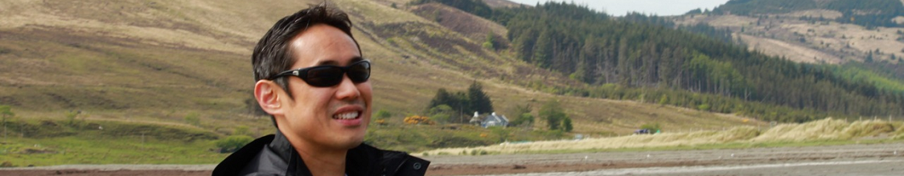

Mitsuhiko Ota
Professor of Language Development
School of Philosophy,
Psychology and Language Sciences
University of Edinburgh
I am a linguist and I study how children and adults learn or process the sound patterns of language and the sound forms of words. I run the Edinburgh Laboratory for Language Development (ELfLanD), which is part of the Wee Science consortium of developmental research at Edinburgh.
Here’s my CV.
School of Philosophy, Psychology and Language Sciences
University of Edinburgh
3 Charles Street
Edinburgh EH8 9AD, UK
mits AT ling.ed.ac.uk
orcid.org/0000-0003-3693-8490